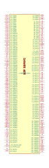

| Symbol |
Description |
CDP1802ACE | Description: 8-bit, General Purpose, 5V, 3.2 MHz, DIP-40
Keys: CPU Processor
Datasheet: http://www.cosmacelf.com/publications/data-sheets/cdp1802.pdf |
CDP1802ACEX | Description: 8-bit, General Purpose, 5V, 3.2 MHz, Burned-In, DIP-40
Keys: CPU Processor
Datasheet: http://www.cosmacelf.com/publications/data-sheets/cdp1802.pdf |
CDP1802BCE | Description: 8-bit, General Purpose, 5V, 5 MHz, DIP-40
Keys: CPU Processor
Datasheet: http://www.cosmacelf.com/publications/data-sheets/cdp1802.pdf |
CDP1802BCEX | Description: 8-bit, General Purpose, 5V, 5 MHz, Burned-In, DIP-40
Keys: CPU Processor
Datasheet: http://www.cosmacelf.com/publications/data-sheets/cdp1802.pdf |

P4080-BGA1295 | Description: QorIQ P4080 Communications Processor, BGA-1295
Keys: Communications Processor
Datasheet: https://www.nxp.com/jp/products/microcontrollers-and-processors/power-architecture-processors/qoriq-platforms/p-series/qoriq-p4080-p4040-p4081-multicore-communications-processors:P4080?&tab=Documentation_Tab&linkline=Data-Sheet |
| Z80CPU | Description: 8-bit General Purpose Microprocessor, DIP-40
Keys: Z80 CPU uP
Datasheet: www.zilog.com/manage_directlink.php?filepath=docs/z80/um0080 |